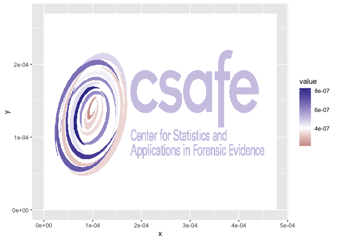

Installation
x3ptools is available from CRAN:
The development version is available from Github:
The file format
The x3p file format is an xml based file format created to describe digital surface measurements. x3p has been developed by OpenFMC (Open Forensic Metrology Consortium, see http://www.openfmc.org/) and has been adopted as ISO ISO5436 – 2000. x3p files are a zip archive of a directory consisting of an xml file of meta information and a matrix of numeric surface measurements.
x3p objects
Internally, x3p objects are stored as a list consisting of the surface matrix (the measurements) and meta information in four records: header info, feature info, general info, and matrix info:
## [1] "header.info" "surface.matrix" "feature.info" "general.info"
## [5] "matrix.info"The four info objects specify the information for Record1 through Record4 in the xml file. An example for an xml file is provided with the package and can be accessed as system.file("templateXML.xml", package="x3ptools").
header.info contains the information relevant to interpret locations for the surface matrix:
## $sizeY
## [1] 419
##
## $sizeX
## [1] 741
##
## $incrementY
## [1] 6.45e-07
##
## $incrementX
## [1] 6.45e-07matrix.info expands on header.info and provides the link to the surface measurements in binary format.
general.info consists of information on how the data was captured, i.e. both author and capturing device are specified here.
feature.info is informed by the header info and provides the structure for storing the information.
While these pieces can be changed and adapted manually, it is more convenient to save information on the capturing device and the creator in a separate template and bind measurements and meta information together in the command addtemplate_x3p.
Usage
Visualizing x3p objects
The function image_x3p uses rgl to render a 3d object in a separate window. The user can then interact with the 3d surface (zoom and rotate):
In case a file name is specified in the function call the resulting surface is saved in a file (the extension determines the actual file format of the image).
Helper lines
image_x3p_grid lays a regularly spaced grid of lines over the surface of the scan. Lines are drawn spaces apart (50 microns by default in y direction and 100 microns in x direction). Every fifth and tenth lines are colored differently to ease a visual assessment of distance.
logoplus <- x3p_add_grid(logo, spaces=50e-6,
size = c(3,3,5), color=c("grey50", "black", "darkred"))
image_x3p(logoplus, size=c(741,419), zoom=0.5, useNULL=TRUE)
rglwidget()
Casting between data types
The functions x3p_to_df and df_to_x3p allow casting between an x3p format and an x-y-z data set:
## x y value
## 1 0.000e+00 0.00026961 4e-07
## 2 6.450e-07 0.00026961 4e-07
## 3 1.290e-06 0.00026961 4e-07
## 4 1.935e-06 0.00026961 4e-07
## 5 2.580e-06 0.00026961 4e-07
## 6 3.225e-06 0.00026961 4e-07When converting from the x3p format to a data frame, the values from the surface matrix are interpreted as heights (saved as value) on an x-y grid. The dimension of the matrix sets the number of different x and y levels, the information in header.info allows us to scale the levels to the measured quantities. Similarly, when moving from a data frame to a surface matrix, the assumption is that measurements are taken on an equi-spaced and complete grid of x-y values. The information on the resolution (i.e. the spacing between consecutive x and y locations) is saved in form of the header info, which is added to the list. General info and feature info can not be extracted from the measurements, but have to be recorded with other means.
Once data is in a regular data frame, we can use our regular means to visualize these raster images, e.g. using ggplot2:
library(ggplot2)
library(magrittr)
logo_df %>% ggplot(aes( x= x, y=y, fill= value)) +
geom_tile() +
scale_fill_gradient2(midpoint=4e-7)
Elementary operations
Rotation and Transposition
rotate_x3p rotates an x3p image in steps of 90 degrees, transpose_x3p transposes the surface matrix of an image and updates the corresponding meta information. The function y_flip_x3p is a combination of transpose and rotation, that allows to flip the direction of the y axis to move easily from legacy ISO x3p scans to ones conforming to the most recent ISO standard.
Sampling
sample_x3p allows to sub-sample an x3p object to get a lower resolution image. In sample_x3p we need to set a sampling factor. A sample factor mX of 2 means that we only use every 2nd value of the surface matrix, mX of 5 means, we only use every fifth value:
## [1] 741 419## [1] 149 84Parameter mY can be specified separately from mX for a different sampling rate in y direction. We can also use different offsets in x and y direction by specifying offsetX and/or offsetY.
sample2 <- sample_x3p(logo, m=5, offset=1)
cor(as.vector(logo_sample$surface.matrix[-149,]), as.vector(sample2$surface.matrix))## [1] 0.8639308Interpolation
interpolate_x3p allows, like sample_x3p, to create a new x3p file at a new resolution, as specified in the parameters resx and resy. The new resolution should be lower (i.e. larger values for resx and resy) than the resolution specified as IncrementX and IncrementY in the header info of the x3p file. interpolate_x3p can also be used to interpolate missing values (set parameter maxgap according to specifications in zoo::na.approx).
Inspecting and modifying meta information
The four records of header info, feature info, general info, and matrix info of an x3p object contain meta information relevant to the scan. x3p_show_xml allows the user to specify a search term and then proceeds to go through all records for a matching term. As a result any matching elements from the meta file are shown:
## $Axes.CX.AxisType
## [1] "I"
##
## $Axes.CY.AxisType
## [1] "I"
##
## $Axes.CZ.AxisType
## [1] "A"## $Creator
## [1] "Heike Hofmann, CSAFE"If a search term identifies a single element, x3p_modify_xml allows the user to update the corresponding meta information:
## x3p object
## Instrument: N/A
## size (width x height): 741 x 419 in pixel
## resolution: 6.4500e-07 x 6.4500e-07
## Creator: I did this
## Comment: image rendered from the CSAFE logoAdding and modifying masks
Images as masks
A mask is used to markup regions of the surface - the mask can then be used to overlay the rendered surface with color.
Below is a 3d surface of a part of a bullet surface is shown. Some regions are marked up: the bronze colored area is an area with strong striae (vertical lines engraved on the bullet as it moves through the barrel of the handgun when fired), areas in dark blue show groove engraved areas, the light blue area shows break off at the bottom of the bullet, and the pink area marks an area without striae:

Any image can serve as a mask, the command x3p_add_mask allows to add a raster image as a mask for a x3p object:
logo <- read_x3p(system.file("csafe-logo.x3p", package="x3ptools"))
color_logo <- png::readPNG(system.file("csafe-color.png", package="x3ptools"))
logoplus <- x3p_add_mask(logo, mask = as.raster(color_logo))
image_x3p(logoplus, size=c(741, 419), zoom=0.5, multiply = 30)
Some masks are more informative than others, but the only requirement for images is that they are of the right size.


Editing masks
Masks are raster images. Any change to the raster manifests as a change in the surface color of the corresponding scan. We suggest using the magick package to manipulate masks.
Additionally, vertical and horizontal lines can be added in the masks using the commands x3p_add_vline and x3p_add_hline:
logo <- read_x3p(system.file("csafe-logo.x3p", package="x3ptools"))
logoplus <- x3p_add_hline(logo, yintercept=c(13e-5,19.5e-5), color="cyan")
#image_x3p(logoplus, size=c(741, 419)/2, zoom=0.5, multiply = 30, file="man/figures/logo-lines.png")